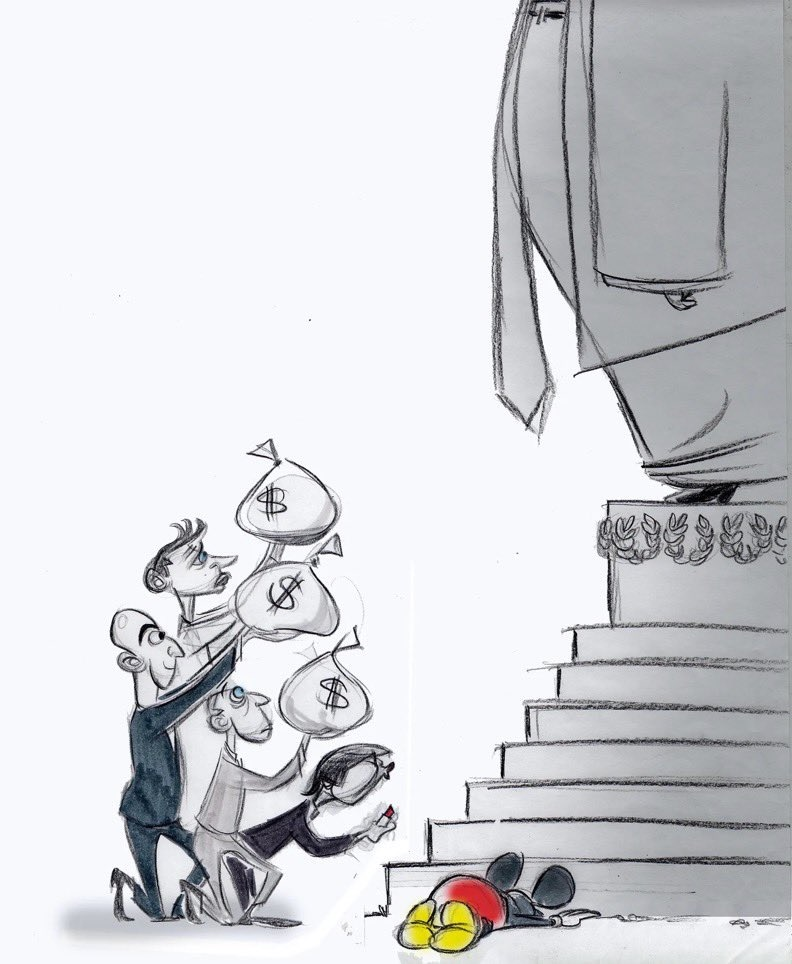
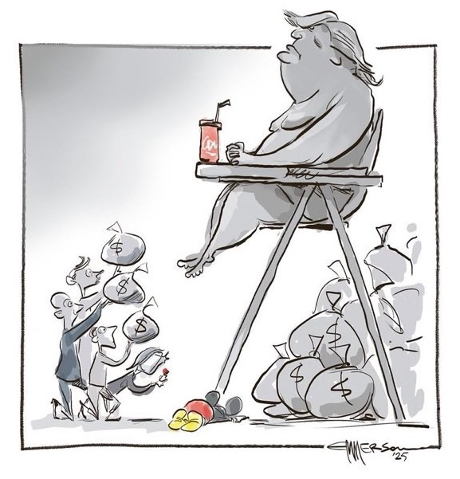
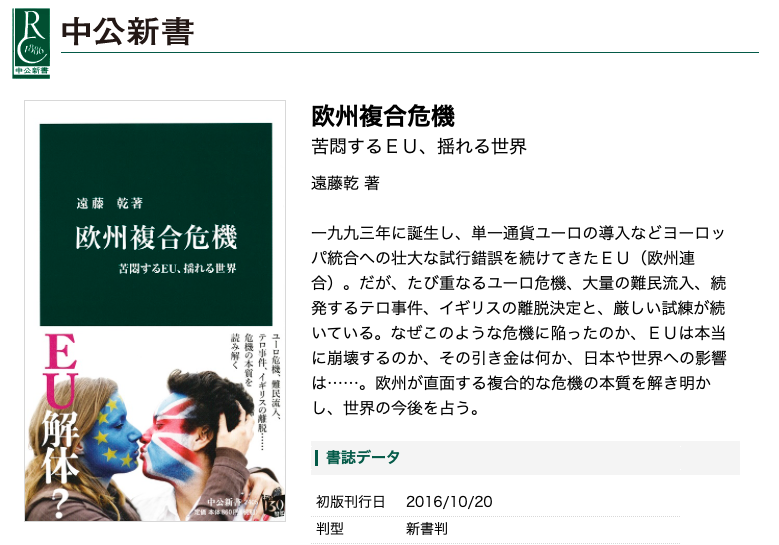

政治学概論Ⅱ ＃3 国際政治学（2）
グローバルイシュー②公衆衛生③主権と自治
![]()
2025年1月10日
キーワード
キーワード
- グローバルヘルス
- インターナショナル・ヘルス
- 主権
- 自治
- 民主的正統性
- 複合危機
- EU（フェデレーション）
授業の感想
授業の感想
1. 世界のニュースと日本のニュース
世界の実際の状態と日本のニュースなどを用いた情報には非常に乖離があるという認識を持つことが重要だと感じた。世界の状況は日本のニュースや新聞などでは伝えきれない部分や問題の優先順位を付けられていることが多く、講義内であったyoutubeやネットといった情報から自分で調べ情報を補っていく必要があると感じたから。また、日本では報道されていない世界のニュースは多い一方で、すべてを報道していくのは現実的に考えて不可能であり、これは日本の報道が悪いとよくネットなどで批判しているコンテンツについて一概に否定する認識は不適当だと実感し、報道の難しさを理解したから（大石）。
授業の感想
2. グローバル・ガバナンス論
内政不干渉の原則は、現在では中国などが問題視されているが歴史的に見れば日本も朝鮮などで行っていたため他人事ではないためこれについて考えることは重要であると考えた。近隣諸国とのトラブルなど「国際的な問題を封じ込める言い訳」として用いられるという点において、「言い訳」という言い回しが疑問に感じた。民族自決の観点から考えると内政干渉は否定されるべきものであると考えていたが、国際政治学では内政不干渉の原則と言い切れない問題も多く、言い訳と捉えられるという点が気になる点でもあり面白い点でもあると考えた（小松）。
マイノリティがどういう生活を送っているか想像することができないということ、問題の無関心によって生じる政府と市民の溝。市民がその問題を知ろうとすることなしには、グローバル・イシューの解決に向けた行動を政府が取れないと考え、重要な箇所として上記を挙げた。問題に対して想像することができなかったり、無関心のままでいてしまったりする理由は、そもそも問題についてよく知らないからだと考える。私たちが物事に興味を持つときには、ある程度その物事について知っていることが前提にあるように思う。しかしながら、社会の諸問題について大人になってからは自分から進んで調べることなしには、それらの情報が得られず、興味のない人は興味のないままでいるのではないかと考える。一方で、学校ではグローバル・イシューを含め社会の諸問題について嫌でも学ぶ機会が設けられている。こうしたことから、教員になる際には、子ども達に問題に興味を持ってもらえるような内容のある授業をしたいと改めて思った（田辺）。
授業の感想
2. グローバル・ガバナンス論
グローバル・イシューが面白いと思った点は、（２）の大国にとって放置可能なイシューである。それは、世論は大国にとっても重要なイシューであると感じたためである。大国はそれなりに人口がおり、世論が国家にもたらす影響は大きい。なので、世論が放置可能なイシューとされているのが納得がいかなかった（爲石（康））。
➡ 原田さんの回答を参照
世論がない限り主権国家は動かないが、その世論ですら政府やメディアに操作されやすく操作されていることにすら気づかないということが個人的に重要であると感じたから。また、世論が他国の問題には反応しづらいという部分には人々の心のどこかで「自分には関係ない」や「自分の国は安全だから」という無関係・謎の自信など心理的な影響が強く出ているからではないかと考えられることが、面白いと感じたから（原田）。
授業の感想
3. 難民問題
〔略〕日本の難民に対しての制度が厳しいことは仕方ないと思うが、世界に比べて制度が厳しいことが知られていない現状は良くないと感じた。私たちは世論によって政治家に訴えていくことが重要であると感じた（本間）。
グローバル・イシュー②：公衆衛生問題
動画で考える公衆衛生問題
- LIBERARY「【政治学】詫摩佳代「健康をめぐる政治アリーナ」by LIBERARY」（YouTube）
詫摩佳代（2020）「公衆衛生と安全保障」（SYNODOS）
感染症：公衆衛生問題と安全保障問題のはざま
- 公衆衛生問題は、伝統的に安全保障問題とは見做されてこなかった
- 転換の背景
詫摩佳代（2020）「公衆衛生と安全保障」（SYNODOS）
感染症への対応
- エイズ（上記参照）
- 重症急性呼吸器症候群（SARS、2003年）
- 専門家の活躍；米中協調
- エボラ出血（2014年）
- アメリカのリーダーシップ；WHOと国連、PKO、世界銀行など多様なアクターの連携
詫摩佳代（2020）「公衆衛生と安全保障」（SYNODOS）> 感染症への対応
- Covid-19
グローバルな連帯の欠如
Covid-19責任論（中国を危険視）
WHOに対するアメリカ（トランプ大統領）の不信
トランプ米大統領は、世界保健機関(WHO)が「あまりにも 政治的で、中国寄りである」と批判、5月末には「WHOとの関係を終わらせる」と発言した（詫摩佳代 (2020)）
国際保健規則（感染症対応に関する各国やＷＨＯの義務・権限などを記した国際条約）の不備
規則で定められた義務や権能をWHO並びに加盟国が適切に果たしていない現状が今回、明らかとなった。WHOは国家以外の様々な主体から情報収集できることとなっているが、WHOへの参加が叶わない台湾が年末に送ったとされる情報の処理については必ずしも適切ではなかった。また中国は11月頃から感染を確認していたにもかかわらず、WHOに報告したのは12月末であった。規則に定められたWHO並びに各国の対応能力の向上という大きな課題が立ちはだかるのである（詫摩佳代 (2020)）
包括的な枠組みの未整備：WHOの問題
- 恒常的な財政不足
- 強制力を伴わない組織
詫摩佳代（2020）「公衆衛生と安全保障」（SYNODOS）
Cf. ‘Tedros Adhanom, head of the WHO, on the lessons from covid-19’ The Economist
The covid-19 pandemic has shown how right they were, on both counts. The lack of global co-operation to share information, data, vaccines and other tools prolonged and worsened the pandemic. As the world rebuilds from the most severe health crisis in a century, nations are once again coming together to negotiate a new pandemic accord—a legally binding pact to meet shared global threats with a shared global response. They are also discussing amendments to the International Health Regulations, the instrument of international law that governs the global response to health emergencies.
グローバル・ヘルス > インターナショナル・ヘルス
- ⇄ インターナショナル・ヘルス
⑴ インターナショナル・ヘルス
- 主権国家関係（条約、国際機構）
- 国益・ナショナリズム（「国際政治の力学」）
- 国際協調；国際主義
グローバル・ヘルス > インターナショナル・ヘルス
- 19世紀コレラの流行
- 例：イギリスの検疫法（laws of quarantine）
- 1709年 検疫法制定
- 1825年 検疫の実施、期間を枢密院の自由裁量とする
- 自由貿易の拡大（商工業者の陳情）
- 19世紀前半のコレラの流行
- 検疫を実施しても感染症の拡大を防げず
- 検疫の根拠である接触伝染説への疑義
- 「換気」の重要性が説かれる
- 国際機関、国際的な専門家ネットワークの不在
- 国際衛生会議における検疫維持派（防疫）の主張
- 科学的根拠を装いつつ
- 内政干渉を防ぎたい
- 保護貿易をとりたい
- 科学的根拠を装いつつ
- 例：イギリスの検疫法（laws of quarantine）
- ➡ 20世紀の戦間期（国際連盟期）において、国内行政機構（厚生・衛生部門）、国際機構、国際的な専門家ネットワークの形成、発展
グローバル・ヘルス > グローバル・ヘルス
⑵ グローバル・ヘルス
- 国家間（inter-national）の枠組みでは解決できないことを背景に登場した概念
- 国際組織ではなく、公私パートナーシップが中心
- 公的性格と、私的性格をあわせ持つ組織
- 例：感染症流行対策イノベーション連合（CEPI）
- GAVIワクチン・アライアンス
- Global Outbreak Alert and Response Network（GOARN）
- 感染症を専門とする多様な研究機関・政府機関・国際組織・NGOをつなぐネットワーク
- ➡ 主権国家ないし国際法を超えた、グローバルな秩序形成
グローバル・ヘルス > ヘルスの多義性
⑶ ヘルスの多義性
- 医学的要因：健康とは病気がないこと
- 保健は医学や科学の課題であり、ワクチンや殺虫剤散布のような技術的手段で感染症を制することができる
- 社会的要因：健康に生きられる、衛生的で豊かな社会をめざす
- 病原体を防ぐためには、生活環境、栄養や知識の状態、労働条件や貧富の克服、是正までが必要
健康（ヘルス）とは、身体的・精神的・社会的に完全に良好な状態のことであって、単に病気や虚弱が存在しないことではない（WHO憲章前文）
- ➡ しかし、戦後のWHOの中心事業は、生物医学的保健理念にもとづく、感染症根絶事業にとどまる
- 1970年代以降、WHOは後者の立場に立つ
- 「プライマリ・ヘルス・ケア」
- 1970年代以降、WHOは後者の立場に立つ
グローバル・ヘルス > WHOと公私パートナーシップ
⑷ WHOと公私パートナーシップ
- 1980年代以降、新自由主義的な政策傾向が強まる
- 費用対効果の重視
- 出資国（主権国家）の意向が強く反映される
- 効果の出ない政策プログラムは、廃止ないし縮小対象
- 「選択的プライマリ・ヘルス・ケア」
- 出資国（主権国家）の意向が強く反映される
- 費用対効果の重視
- ➡ 先進国や民間財団の協力が得られやすいプログラムが中心に
- ➡ 公私パートナーシップをはじめとする新たな事業形態の導入
- ➡ 効果を実証しやすいプログラムが中心に
グローバル・ヘルス
⑷ WHOと公私パートナーシップ
例えば、「3億人の子どもたちにワクチンを接種することで、子どもの死亡率を10%引き下げ、500万人の子どもの命を救いました」という成果報告は、投資家に強く訴える力を持つ。他方で、保健インフラの整備や、社会制度の構築などのように、生活環境をたしかに向上させるけれども数値的な成果を示すことの難しい保健事業は、このような枠組みの下では選ばれにくい（西平等 (2022), p.317）
- ➡ 生物医学的な保健理念への後退包括的な保健政策の実施には莫大な費用がかかる。また、その効果によって生活状態が改善されるまでには長い時間を経なければならない。そもそも、経済の発展が伴わなければ、生活状態の大幅な改善は望めないだろう。そのような不確実な将来を展望するよりも、もっと確実で即効性のある方法があるはずだ。例えば、20世紀の前半には、多くの専門家が、マラリアを社会的な病気であると考えていた。……経済発展と生活環境の改善を達成した地域からは、媒介蚊を駆除するまでもなく、マラリアは消えていった（西平等 (2022), p.314）
グローバル・イシュー③：主権と自治
主権と自治 > リーディングアサインメント
細谷雄一・遠藤乾「これはグローバリゼーションの反動なのか？」
私が面白いと思った箇所は105、106ページの「グローバリゼーションが進むほど差異化の願望が強まる」という部分である。 グローバリゼーションとは今まで、どちらかと言えば良いことのように思っていたが、それが進めば進むほど、差異化の願望が強まり、「危険な」ことになる可能性が否定できないという部分が印象に残ったからである。保守党のイデオロギー的な硬直化が地域の自治や独立に起因するということが分かった。多様性を表明する場を提供せず、力ずくで制圧したり、政治・経済・文化を中央が統べてしまうと、紛争が激化してしまうというところも印象に残った（内坂）。
105 東京ー那覇関係に、容易に類推可能 そもそも、スコットランドと沖縄の状況は違うはずなのに、類推可能と言うのはおかしいと思うし、なぜ類推できるのか訳がわからないし面白いので。実際、なぜ沖縄に基地があるのかは、中国を警戒してなわけだが、逆に言えば基地が無ければ中国に責められる可能性が高いのは、簡単にわかる。また、基地反対と言っているのは主にジジババの共産主義者であるし、独立を熱心に言っているのは、高齢者や知事がほとんどな気がする。なので、スコットランドと沖縄は状況が違う（片山）。
主権と自治 > リーディングアサインメント
104 94年のブダペスト覚書と97年の友好条約において、ロシアとの国境線を変更しないことで合意していることや、領土の変更がウクライナ国民による投票でのみ解決されることなどが決まっているにもかかわらず、クリミア独立や今のウクライナ紛争が起きているということを知った。法の支配が機能しておらず、内政干渉ともとれる動きが現在ロシアによって行われていることについて改めて考えさせられた（小松）。
世界市場が国民国家に及ぼす影響について 101頁 第２回の講義でグローバル・ガバナンスの難しさのひとつとして，市場を制御できないことが挙げられていたが，具体的にどういう関係してくるのかイメージできていなかった。今回の論考において，イタリアの北部同盟の概要が紹介され，世界市場がどのように国民国家に亀裂をもたらすのか知ることができたから。一方で，日本をイメージした際，「世界市場というのは、安定した国民国家さえ引き裂く」といえるのか疑問に思った（田辺）。
国家は弱体化しているのではなく、無限に強い（106ページ） 国家は、グローバリゼーションによって主権の再編が求められる中でも、経済や法制度の統制力、法の支配による秩序維持、さらに軍事力と安全保障の独占を通じて統治能力を強化し続けており、その柔軟性と支配力によって依然として強い存在であるのだと感じたから（三島）。
主権と自治 > 補足

Source: Ann Telnaes

Source: Rod Emmerson
主権と自治 > 補足
‘An American purchase of Greenland could be the deal of the century’ (The Economist)
From whom could the island be bought? In 2009 Denmark all but granted Greenland the right to declare independence should its people choose in a referendum. The island’s nationalist government would very much like to exercise that right. At the same time Denmark granted the territory control of its own natural resources (though as its revenues go up, its block grant from Denmark goes down). Any purchase, therefore, should not be from Denmark, which really would be colonialist, but from the islanders themselves. If America offered merely our crude valuation of the flow of future taxes, it would amount to nearly $1m per inhabitant. Given the territory’s riches and importance, America could probably make every Greenlander a multimillionaire and still benefit enormously from the purchase.
Respecting Greenland’s right to self-determination means respecting its citizens’ right to consider such an offer, which could be put to a referendum. For the choice to be free, Mr Trump would have to retract his threat of force. He should do so—and then try putting some red meat in front of the polar bear.
主権と自治 > グローバリゼーションと「独立運動」
- 民主化運動の波（2010年代）
- アラブの春
- スコットランド
- ウクライナ
- カタルーニャ
- 香港
 SOURCE: BBC
SOURCE: BBC
主権と自治 > グローバリゼーションと「独立運動」
- Ukraine: What happened in Kiev’s Maidan square?(BBC NEWS via YouTube)
2014年2月20日、キエフのマイダン広場で50人以上の反政府デモ参加者が射殺された。この虐殺事件をきっかけに親ロシア派政権が崩壊し、モスクワがクリミア併合に踏み切り、東部で分離独立戦争が勃発した。当時、この事件の死因は機動隊によるものと非難されたが、この日銃撃を行っていたのは機動隊だけではなかった。銃撃を目撃したBBCのガブリエル・ゲートハウス記者は、事件の再調査を行った。
非武装のデモ参加者が、キエフのマイダン広場から撤退する機動隊によって路上で銃撃された。
徹底的かつ透明性のある調査が行われないため、陰謀説が蔓延している。多くのウクライナ人は、20日の銃撃事件は、クリミア併合を正当化し、東部での分離独立運動を煽るためにモスクワが計画し、指揮した挑発行為であったと信じている。ロシア人は、マイダンはCIAが扇動したクーデターであったと反論している。どちらの側も、主張を裏付ける信頼に足る証拠を提示していない。
主権と自治 > グローバリゼーションと「独立運動」
- 背景1：主権の構成要件の乖離（中村研一『地球的問題の政治学』（2010年））
- 主権の構成要件：
- 領域性
- 政府の秩序形成能力
- 決定
- ➡ 国家の政策機能及び決定の脱領域化
- 主権の構成要件：
主権と自治 > グローバリゼーションと「独立運動」
- 背景2：世界市場の影響力の増大（ステファノ・バルトリーニ）
- 世界市場がもたらす国民国家内の亀裂
- 豊かな地域と貧しい地域（例：イタリア北部と南部）1
- ➡ 豊かな地域は独立を求める（国民国家としての一体感の欠如）（細谷雄一・遠藤乾 (2014), p.101）
- グローバル化に対抗するための国際協調：EU
- 世界市場がもたらす国民国家内の亀裂
世界がグローバル化した中で、共同で制御可能性を上げていこう、というのがEUで、その分、主観的には自国の操能意識が落ちるわけですね（細谷雄一・遠藤乾 (2014), p.102）
主権と自治 > グローバリゼーションと「独立運動」
- 主権への過剰期待
- 「自らの秩序形成能力を過大評価」（細谷雄一・遠藤乾 (2014), p.102）
- ブレグシットの際の離脱派（保守党ら）のキャッチコピー：
- ‘take back control’（主権を取り戻そう）1
- ➡ 主権（自己決定権）をもつことと、問題への十分な対応能力をもつかはまったく別の問題（特にグローバルイシューがかかわる問題）
- 平和なスコットランド独立運動（レファレンダム）2
- 英国離脱賛成派もレファレンダムの結果（英国残留）を尊重
- Cf. クリミア共和国の住民投票と独立宣言
- ロシアの手引きによる傀儡政権
主権と自治 > グローバリゼーションと「独立運動」
主権と自治 > EUと欧州複合危機
主権と自治 > EUと欧州複合危機
⑴ EU（European Union）
- 合意による主権の拘束と、EU単位での問題への対処
- federationとintergovernmentalismのあいだ
- 機構
- 欧州理事会（European Council）
- 閣僚理事会（Council of Ministers）
- 欧州委員会（European Commission）
- 欧州議会（European Parliament）
⑵ 複合の意味
- 同時多発的におこる複数の危機：複数性
- それらの危機の相互連動性：連動性
- ユーロ危機による財政規律➡ 各国、デフレ➡ 政治的に左右に両極化
- 国際、EU、加盟国、地域といった縦の連関：多層性
- 中央政府への集権化➡ 周辺地域の分離運動➡ 内政危機がEUに跳ね返る（遠藤乾 (2016), iii）
主権と自治 > EUと欧州複合危機
⑶ EU問題の語られ方
- うまくいっている時とうまくいっていない時の激しい落差
- ジェットコースター型の言説
- 語られ方自体に問題がある
- ジェットコースター型の言説
- 危機が立ち上げる神話
- 独仏の和解；主権とナショナリズムの克服；平和と安定；繁栄と連帯
- ➡遠藤：いずれも神話に過ぎない
- EUへ投影されるロマンチックな見解
- 危機が神話を惹起し、現状批判の道具と化す
- 例：ユーロ危機において、かつて連帯していたEUは、冷血なドイツによってギリシャ人を見捨てたという物語に回収される
- 事実：EU諸国間の連帯：今も昔も希薄
- なぜ、EUがしぶとく生き残るのか、こそ問うべき問い（遠藤乾 (2016), pp.223–226）
主権と自治 > EUと欧州複合危機
⑷ EUは何に向いていたのか：ドイツ問題と東西冷戦
- EUの形成とその規定要因
- ドイツ問題への対応
- ドイツをどう広域秩序のなかに位置づけ直すか
- マーストリヒト条約
- 「統一し強大化するドイツに対する保険」（遠藤乾 (2016), p.153）
- 冷戦の交錯、アメリカの圧力
- アメリカに後押しされた、ヨーロッパの統合
- 例：マーシャル・プランの効率的資金援助のための枠組み
- EU=NATO体制
- 独ソの二重の封じ込め
- 冷戦構造に枠付けられた存在
- アメリカに後押しされた、ヨーロッパの統合
- ドイツ問題への対応
- 冷戦終結とその含意
- メンバーシップの変更
- 「中立」国の加盟；旧東側諸国の加盟
- 安全保障機能を備えるEU
- 加盟国拡大とそのマネジメント
- 単一通貨ユーロの創設と運営
- メンバーシップの変更
主権と自治 > EUと欧州複合危機
⑸ 現代における統合規定要因の変容
- 再熱するドイツ問題
- ユーロ危機を通じて、ドイツの力が突出
- ドイツの意向を誰も無視できず
- 遠藤：ドイツが人口減少傾向にある点に注意を促す（遠藤乾 (2016), p.159）
- ドイツを封じ込めるためにEUがある以上、「ドイツ問題」は一種の「常態」
- ➡ EUはドイツの力の緩和に役立つ
- ユーロ危機を通じて、ドイツの力が突出
- 冷戦後のイデオロギー
- 冷戦時の体系的イデオロギー（反共産主義など）は喪失
- Cf. 冷戦時のイデオロギー：実質的に地政学的要因が強かった
- 西欧近代とジハード主義（ヨーロッパ vs. ムスリム）
- ジハード主義の教義において、個人主義、資本主義、自由民主主義は普遍的ではない（遠藤乾 (2016), p.162）
- 冷戦時の体系的イデオロギー（反共産主義など）は喪失
主権と自治 > EUと欧州複合危機
というのもEUは、公安や警察といった国家主権に深くかかわる領域での統合が浅く、域内の犯罪者を主体的に捕捉したり、域外から入ってくる不法移民・難民を排除する実力を十分には持ちあわせてはおらず、合法的に加盟国のどこかに入国した穏健なムスリムを、自由•平等の価値のもとで包摂し、その域内自由移動を保障することはできても、平時であれ危機であれ、過激化・ジハード主義化し、ときにテロに走るムスリムに体系的に対処する態勢にはなっていないからである。いわんや、域外でISのような形で勃興する新手のジハード主義勢力ないし疑似国家に直接対抗するための手立てがEUにあるわけではない（遠藤乾 (2016), p.165）
主権と自治 > EUと欧州複合危機
⑹ 外交危機から社会・経済・政治危機へ
- 軽薄な民主的正統性
- ユーロ危機において表出
- 従来：民主的正統性の不足を機能性正統性によって補う
- 民主的正統性：「みんなで決めたから」正しい
- 機能的正統性：「うまく作動しているから問わない」
- 現在：欧州議会議員選挙：低い投票率（＋国政への信任・不信任投票になっている）1 2
- ➡銀行同盟（EUの金融行政の単一監督メカニズム）：財政統合などの高度な統合に踏み切れず
- 「みんなで決めた」という支えなし（遠藤乾 (2016), p.166）
主権と自治 > EUと欧州複合危機 > 外交危機から社会・経済・政治危機へ
- 市民生活の規制主体へ
- 1988年前後：教育や社会分野における措置にかかわるようになる
- 水質汚染の基準設定；女性登用の目標づくり；農薬の使用制限；交換留学の推進
- ➡ ジャック・ドロール vs. サッチャー
- 1990年代以降：市場自由化の水準向上
- 公営から民営へ：水道；ガス；電気
- 労働者の雇用問題に直結
- ➡ 欧州統合の深化への国民からの疑義・異議（遠藤乾 (2016), pp.169–170）
- 1988年前後：教育や社会分野における措置にかかわるようになる
- C. ヒル「期待＝能力間乖離」論
- 身近さゆえにEUへの「期待」が高まる
- その期待に応えるだけの「能力」をEUは依然、備えていない
- ➡EUに「期待」する者ら：「裏切られた」「反感」へ（遠藤乾 (2016), pp.171–172）
主権と自治 > EUと欧州複合危機
⑺ アイデンティティと連帯
- アイデンティティの希薄さ
- EU権限は増加するが、それを支えるヨーロッパ・アイデンティティを伴わず
- ユーロ；シェンゲンなど、各国の調整を要するものについては、同胞意識が不可欠
- 強靭なナショナリズム
- ハンス・コーン：ナショナリズムの特徴
過去における共通の栄光、現在における共通の利益、未来に対する共通の使命（遠藤乾 (2016), p.190）
- 現代人の不安・不満の解消法
- 自分が所属するネーションの栄光、利益、使命による、意味づけを要する
- デモクラシーと国民国家
- 自決の論理は国境をまたがず
- ナショナル・アイデンティティ
- 危機や外部の刺激によりいつもで再活性化（遠藤乾 (2016), pp.190–193）
- EU権限は増加するが、それを支えるヨーロッパ・アイデンティティを伴わず
主権と自治 > EUと欧州複合危機 > アイデンティティと連帯
- 越境的連帯
- ドイツ、ユーロ危機において、多額の拠出をなす
- ギリシャに最大840億ユーロ（約9兆7000億円）の持ち出しあり
- 巨額の資金・信用供与：2013年の総選挙の争点とならず
- EU予算：1/5をドイツが負担
- ドイツ、ユーロ危機において、多額の拠出をなす
主権と自治 > EUと欧州複合危機
⑻ デモクラシーと機能的統合
- デモクラシーの希薄さ
- 民主的正統性を欠くがゆえに機能強化（統合や集権）が進まず
- 「集権は必要なのに民主的正統性が追いつかない」というジレンマ
- 正統性：デモクラシーにより調達される
- 「正しさ」＝「みんなで決めた」ことに由来
- 一国を超える民主的正統性は可能か
- ともに決めていこうという空間：国境を越えない
- EUでの決定に「正しさ」を感じるかどうか
- 一国を超える民主的正統性は可能か
- EUにおける多数決原理の導入（以前は全会一致）
- 当初：市場統合分野のみ（1986年）
- 現在：外交政策以外のすべての政策領域
- 各国は拒否権を失い、拒否した事柄であっても合意拘束される（遠藤乾 (2016), pp.199–202）
- 「正しさ」＝「みんなで決めた」ことに由来
主権と自治 > EUと欧州複合危機
⑼ 自由と寛容
- 消える寛容・人権意識
- 国境の復活；域内対立；EU=トルコ間合意
- EU「規範力」の名折れ
- ➡ 一般的論調：EUは偽善と自己矛盾をあらわに、EUは道徳的に自壊
- 例外状況における主権の復活（遠藤）
- 短期的難民流入をEUは想定せず
- EUはもとより、域外からの流入には警戒的；域内移民への人権付与を目指す
- メルケル首相の寛容さこそ例外的（遠藤乾 (2016), pp.205–216）
宿題
宿題
- 授業の感想
- リーディングアサインメント
- レポート課題
内容､期日については「提出物（提出先）」を参照